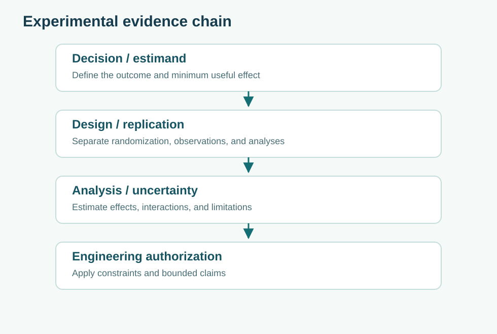

Reliability, availability, and maintenance are different claims
Core Concepts · Assurance · T17
Connect failure processes, repair queues, spare parts, common causes, and mission continuity.
Recommended preparation: 06 Inference, 09 Assurance
Related companion books: Book 7, Book 8, Book 18

1. Define what must succeed, and for how long
Reliability is the probability of performing a required function without failure over a specified interval and environment. Availability concerns whether the function is operational at a given time or over an interval, including repair and support. A vehicle that rarely fails but takes two weeks to repair may be reliable on a short trip and unavailable for much of the month. A rapidly repaired fleet may have high availability while still experiencing hazardous failures at unacceptable times.
Specify the mission: “Complete a 45-minute emergency-access trip without losing a required communication function,” rather than “99.9% reliable.” The statement must identify the success criterion, mission time, environment, hardware/software configuration, and exclusions.
2. Understand the constant-hazard simplification
Under an exponential lifetime model with constant hazard rate $\lambda$, reliability over time $t$ is
If the mean time between failures is 500 operating hours, the assumed rate is $\lambda=1/500$ per hour and the probability of zero failure over a 10-hour mission is $e^{-10/500}\approx0.9802$. This is a model illustration, not evidence that real software defects, batteries, and maintenance practices have exponential behavior. Wear-out, early-life faults, duty-cycle variation, and common maintenance errors can violate a constant hazard assumption.
For a repairable component with steady exponential up/down transitions, the simplified steady-state availability is
With 500 hours MTBF and 5 hours MTTR, $A\approx0.9901$. But the mean repair time is not necessarily the same as mean operational downtime. Waiting for a spare, technician travel, safety inspection, and restart authority may dominate the outage.
3. Analyze series, redundancy, and common causes
If two independent components must both function, $R_{series}=R_1R_2$. If either of two independent components can perform the function, $R_{parallel}=1-(1-R_1)(1-R_2)$. Assume each has mission reliability 0.95: series reliability is 0.9025; parallel reliability is 0.9975. A component-redundancy claim often overlooks shared power, common software, environmental exposure, or administrative shutdown.
One simple illustrative beta-factor model splits failures into independent and common-cause contributions. Do not automatically apply the independent parallel formula when both components share a defect. Model the dependency explicitly and run sensitivity cases: a large common-cause fraction may erase much of the apparent redundancy benefit.
4. Add the maintenance system
A spare part that exists in a warehouse but cannot arrive during the outage window is not effective redundancy. Model detection, diagnosis, isolation, travel, repair, verification, and authorized return to service. For a fleet of several vehicles, parts and technicians create queues: a second failure may wait while a first vehicle consumes the sole repair resource. The repair process is itself a system with capacity, stochastic arrivals, priorities, and reliability dependencies.
For an engineering trade study, compare the cost of adding one spare module against the expected cost of extended unavailability. Use a range of plausible failure and lead-time rates, not a single false-precision forecast. Include the possibility that all spare modules share the same defective firmware revision.
5. Validate reliability evidence at the right level
A component test proving electrical survival under laboratory vibration conditions is useful but does not prove end-to-end mission availability. A field-data record should include exposure time, censored lifetimes, failure definitions, configuration revisions, and maintenance actions. A test with no recorded failure has an upper confidence bound conditional on the observation process; it does not make the failure probability zero.
If an operational failure is hidden by a fallback mode, distinguish mission success from component survival. Some failures reduce safety margins while preserving apparent service completion. Recovery effectiveness should be measured separately from failure frequency.
6. Worked fleet decision
Northstar may buy one additional vehicle or improve repair logistics. The vehicle improves capacity only when it is available; faster repair improves the return of failed vehicles. A reasonable decision model evaluates fleet service coverage under both random outages and correlated depot-wide events. If three vehicles are stored at one flood-prone location, independent component reliability says little about storm resilience. Geographic separation may be more valuable than a fourth co-located vehicle.
Use scenarios: independent component faults, loss of depot power, spare shortage, and a common firmware defect. Define demand coverage and emergency access as outcomes. Quantitative reliability estimates become informative when paired with operational stress tests and explicit assumptions.
Practice questions
A. Compare 10-hour reliability and steady availability for a component with MTBF 500 hours and MTTR 5 hours. B. Compute two-component series and parallel reliability with independent 95% components. C. Explain why a shared update mechanism undermines an independence claim.
Answer check
$R(10)\approx0.9802$, $A\approx0.9901$, $R_{series}=0.9025$, $R_{parallel}=0.9975$ under the declared models. A shared software update, technician procedure, or power source can defeat multiple supposedly redundant channels simultaneously.
Further connections
See Safety engineering, statistical evidence, and queueing. Reliability, safety, and service capacity should appear as distinct requirements and test claims.
Guided laboratory
Open the corresponding case-based lab